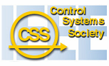

FINANCIAL SUPPORT FOR DEVELOPING NATIONSThere are three Financial Support Programs for authors of accepted papers (one author for a paper): - Travel Support for Developing Countries (TSDC) - IEEE members from developing countries - Conference Support for Developing Countries (CSDC) - participants from developing countries - Student Travel Support (STS). Student members of both IEEE and CSS at the time of the application, presenting at least one accepted paper are eligible. Application procedures for each type of support are posted below.
Program Details
Eligibility Conditions:
1. Applicant must be an IEEE member.
2. Applicant must be working in an institution of one of the selected countries at the time of his/her application for funding, but not as a Visiting Academic from a country that is not on the list. See the List of Developing Countries below. 3. Applicant must have a paper accepted at the Conference and be the presenter of that paper. 4. No more than one travel grant will be allocated for one paper, or to one person in the same year. 5. Participants from the organizing country are not eligible.
1. Applicants who have not benefited from this scheme in the last two years. 2. Applicants who are minimum income IEEE/CSS members. 3. Applicants who will present a regular paper at the Conference.
Requested information on the form includes: - IEEE membership number and contact information, - information about the accepted paper(s), - a statement indicating that this person satisfies the residence requirement (see criterion 2 above) and will present the paper at the Conference if the travel support is granted, - a statement indicating whether or not this person has already received such grant in the last two years, - a statement indicating whether the applicant is a minimum income IEEE/CSS member.
Eligible applicants can apply for the Travel Support Program for Developing Countries or for the Student Travel Support program, but NOT for both programs simultaneously.
IMPORTANT DATES
Conditions of the Award Program Details The purpose of the Conference Support Program, which was approved at the December 2007 IEEE CSS Board of Governors’ Meeting for the years 2008-2010, is to promote IEEE CSS and research on Systems and Control in developing countries, by supporting, intellectually and financially, conferences that will take place in developing countries. For MSC 2009 it provides significant reduction of registration fee and a possibility to submit final version of the paper for inclusion into Conference CD Proceedings. Eligibility Conditions:In order to be eligible, the applicant must satisfy the following three criteria: 1. Applicant must be working in an institution of one of the selected countries at the time of his/her application for funding, but not as a Visiting Academic from a country that is not on the list. See the List of Developing Countries below.2. Applicant must have a paper accepted at the Conference and be the presenter of that paper. 3. No more than one travel grant will be allocated for one paper, or to one person in the same year. In case the number of applicants exceeds the budget, additional criteria will be used to make a selection among the applicants. These additional criteria, in decreasing order of importance, include: 1. Applicants who are minimum income IEEE/CSS members.2. Applicants who participated in IEEE/CSS activities (reviewing, chairing sessions, etc.).
Requested information on the form includes: - IEEE membership number (if available) and contact information,- information about the accepted paper(s), - a statement indicating that this person satisfies the residence requirement (see eligibility criterion 1 above) and will present the paper at the Conference if the travel support is granted, - a statement indicating whether or not this person has already received such grant in the last two years, - a statement indicating whether the applicant is a minimum income IEEE/CSS member. Deadline for applying for the Conference Support for Developing Countries is April 25, 2009. If you have questions about this programs, please contact Prof. Anton Shiriaev, who is the “Financial Support Chair” for the 2009 MSC. CONTACT INFORMATION Program Details IEEE Control System Society funds will be used to cover student (or regular, in rare cases) registration. Depending on the number of applications, modest levels of additional support might be available. Application procedure is posted at the page Student Travel Support Program. List of Developing Countries |
 |
2009 IEEE Multi-conference on Systems and Control |
 |